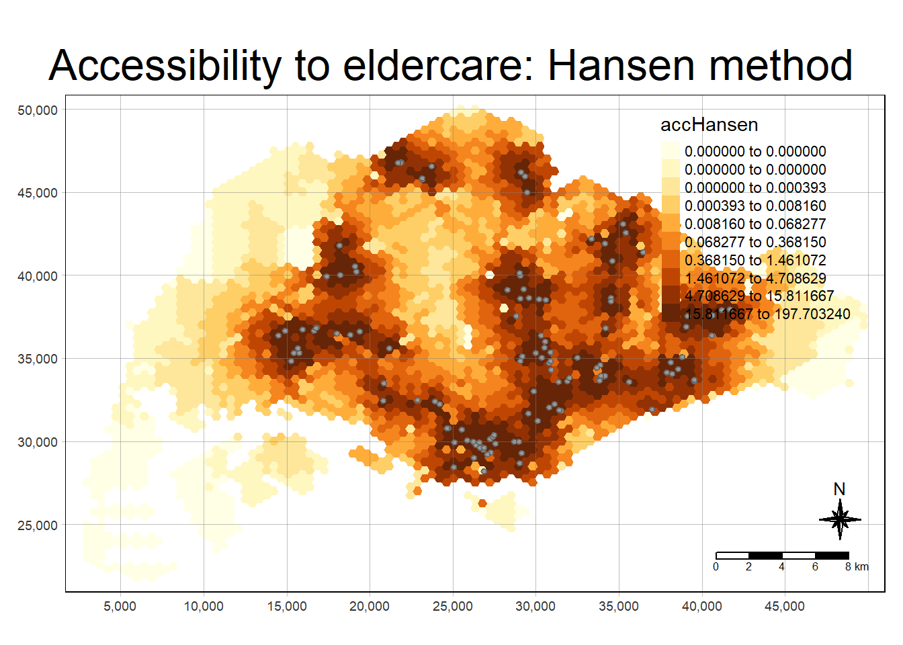

pacman::p_load(tmap, SpatialAcc, sf,
ggstatsplot, reshape2,
tidyverse)Hands-on Exercise 09
Modelling Geographic of Accessibility
The formula developed to measure accessibility is a variation of the gravitational principle and states that the accessibility to an activity is directly proportional to the size of the activity and inversely proportional to the distance to the location of the activity.
Quantifying movement opportunity.
Distance
Time
Cost distance between 2 locations
Why Model Geography of Accessibility?
- Which areas are underserved by healthcare facilities or schools?
- How accessible are job opportunities from different residential areas?
- What is the impact of public transportation on accessibility?
Distance friction
As the distance between two points increases, the likelihood of interaction between them decreases.
The Geographical Unit
Regular-shaped geometries such as squares, hexagons, and triangles reduce bias, improve comparability, minimize edge effects, and facilitate efficient computation, making them ideal for spatial analysis tasks, especially when compared to irregular polygons.
Example Application:
Potential Model: If you’re calculating accessibility to multiple hospitals in a city, you’d estimate the “potential” of each hospital’s influence based on its capacity (e.g., number of beds) and the distance from the person’s home to each hospital.
Modified Potential Formula: You modify the basic potential model by incorporating the difficulty of travel. For instance, hospitals located far away would have exponentially reduced influence due to longer travel times, which is captured by the distance friction coefficient.
Example:
2SFCA: Let’s say we are analyzing access to healthcare in a region. We first calculate the provider-to-population ratio for each hospital within a certain distance, then calculate accessibility at the population points based on the proximity to these hospitals.
E2SFCA: If we want to improve the model, we apply a weight based on distance so that hospitals closer to a population are weighted more than farther ones.
SAM: Finally, we can use SAM for a general accessibility measure with a continuous decay function that decreases the weight of more distant hospitals.
The data
Geospatial Data Wrangling
Importing geospatial data
Import MP14_SUBZONE_NO_SEA_PL
hexagons = A 250m radius hexagons GIS data.
ELDERCARE = GIS data showing location of eldercare service.
mpsz <- st_read(dsn = "C:/ngmengye/ISSS626-GAA/Hands-on_exercise/Hands-on_ex09/data/geospatial", layer = "MP14_SUBZONE_NO_SEA_PL")Reading layer `MP14_SUBZONE_NO_SEA_PL' from data source
`C:\ngmengye\ISSS626-GAA\Hands-on_exercise\Hands-on_ex09\data\geospatial'
using driver `ESRI Shapefile'
Simple feature collection with 323 features and 15 fields
Geometry type: MULTIPOLYGON
Dimension: XY
Bounding box: xmin: 2667.538 ymin: 15748.72 xmax: 56396.44 ymax: 50256.33
Projected CRS: SVY21hexagons <- st_read(dsn = "C:/ngmengye/ISSS626-GAA/Hands-on_exercise/Hands-on_ex09/data/geospatial", layer = "hexagons") Reading layer `hexagons' from data source
`C:\ngmengye\ISSS626-GAA\Hands-on_exercise\Hands-on_ex09\data\geospatial'
using driver `ESRI Shapefile'
Simple feature collection with 3125 features and 6 fields
Geometry type: POLYGON
Dimension: XY
Bounding box: xmin: 2667.538 ymin: 21506.33 xmax: 50010.26 ymax: 50256.33
Projected CRS: SVY21 / Singapore TMeldercare <- st_read(dsn = "C:/ngmengye/ISSS626-GAA/Hands-on_exercise/Hands-on_ex09/data/geospatial", layer = "ELDERCARE") Reading layer `ELDERCARE' from data source
`C:\ngmengye\ISSS626-GAA\Hands-on_exercise\Hands-on_ex09\data\geospatial'
using driver `ESRI Shapefile'
Simple feature collection with 120 features and 19 fields
Geometry type: POINT
Dimension: XY
Bounding box: xmin: 14481.92 ymin: 28218.43 xmax: 41665.14 ymax: 46804.9
Projected CRS: SVY21 / Singapore TMUpdating CRS information
mpsz <- st_transform(mpsz, 3414)
eldercare <- st_transform(eldercare, 3414)
hexagons <- st_transform(hexagons, 3414)Verify the newly transformed mpsz_svy21
st_crs(mpsz)Coordinate Reference System:
User input: EPSG:3414
wkt:
PROJCRS["SVY21 / Singapore TM",
BASEGEOGCRS["SVY21",
DATUM["SVY21",
ELLIPSOID["WGS 84",6378137,298.257223563,
LENGTHUNIT["metre",1]]],
PRIMEM["Greenwich",0,
ANGLEUNIT["degree",0.0174532925199433]],
ID["EPSG",4757]],
CONVERSION["Singapore Transverse Mercator",
METHOD["Transverse Mercator",
ID["EPSG",9807]],
PARAMETER["Latitude of natural origin",1.36666666666667,
ANGLEUNIT["degree",0.0174532925199433],
ID["EPSG",8801]],
PARAMETER["Longitude of natural origin",103.833333333333,
ANGLEUNIT["degree",0.0174532925199433],
ID["EPSG",8802]],
PARAMETER["Scale factor at natural origin",1,
SCALEUNIT["unity",1],
ID["EPSG",8805]],
PARAMETER["False easting",28001.642,
LENGTHUNIT["metre",1],
ID["EPSG",8806]],
PARAMETER["False northing",38744.572,
LENGTHUNIT["metre",1],
ID["EPSG",8807]]],
CS[Cartesian,2],
AXIS["northing (N)",north,
ORDER[1],
LENGTHUNIT["metre",1]],
AXIS["easting (E)",east,
ORDER[2],
LENGTHUNIT["metre",1]],
USAGE[
SCOPE["Cadastre, engineering survey, topographic mapping."],
AREA["Singapore - onshore and offshore."],
BBOX[1.13,103.59,1.47,104.07]],
ID["EPSG",3414]]Cleaning and updating attribute fields of the geospatial data
Add capacity field nto the data table of eldercare
eldercare <- eldercare %>%
select(fid, ADDRESSPOS) %>%
mutate(capacity = 100)The eldercare now contains: fid, ADDRESSPOS, geometry and capacity fields.
Add hexagons field into the data table of hexagons
hexagons <- hexagons %>%
select(fid) %>%
mutate(demand = 100)The hexagons now contains: fid, geometry and demand fields.
Note
Notice that for the purpose of this hands-on exercise, a constant value of 100 is used. In practice, actual demand of the hexagon and capacity of the eldercare centre should be used.
Aspatial Data Handling and Wrangling
Importing Distance Matrix
ODMatrix: a distance matrix in csv format. There are six fields 1. origin_id: unique id values of the origin. 2. destination_id: unique id values of the destination. 3. entry_cost: the perpendicular distance between the origins and the nearest road 4. network_cost: the actual network distance from the origins and destination. 5. exit_cost: the perpendicular distance between the destination and the nearest road 6. total_cost: the summation of entry_cost, network_cost, and exit_cost.
Note
All the values of the cost related fields are in metres.
ODMatrix <- read_csv("C:/ngmengye/ISSS626-GAA/Hands-on_exercise/Hands-on_ex09/data/aspatial/OD_Matrix.csv", skip = 0)Rows: 375000 Columns: 6
── Column specification ────────────────────────────────────────────────────────
Delimiter: ","
dbl (6): origin_id, destination_id, entry_cost, network_cost, exit_cost, tot...
ℹ Use `spec()` to retrieve the full column specification for this data.
ℹ Specify the column types or set `show_col_types = FALSE` to quiet this message.Transform O-D matrix from a thin format into a fat format
distmat <- ODMatrix %>%
select(origin_id, destination_id, total_cost) %>%
spread(destination_id, total_cost)%>%
select(c(-c('origin_id')))
Note
Currently, the distance is measured in metre because SVY21 projected coordinate system is used. The code chunk below will be used to convert the unit f measurement from metre to kilometre.
distmat_km <- as.matrix(distmat/1000)Modelling and Visualizing Accessiblity using Hansen method
Computing Hansen’s accessibility
ac(p, n, D, d0, power=2, family=“SAM”)
p = demand n = supply D = a matrix of quantity separating the demand from the supply
acc_Hansen <- data.frame(ac(hexagons$demand,
eldercare$capacity,
distmat_km,
#d0 = 50,
power = 2,
family = "Hansen"))Rename default field name to accHansen
colnames(acc_Hansen) <- "accHansen"acc_Hansen <- tibble::as_tibble(acc_Hansen)hexagon_Hansen <- bind_cols(hexagons, acc_Hansen)Visualizing Hansen’ accessibility
Extracting map extend
Extract the extend of hexagons sf data frame
mapex <- st_bbox(hexagons)tmap_mode("plot")tmap mode set to plottingtm_shape(hexagon_Hansen,
bbox = mapex) +
tm_fill(col = "accHansen",
n = 10,
style = "quantile",
border.col = "black",
border.lwd = 1) +
tm_shape(eldercare) +
tm_symbols(size = 0.1) +
tm_layout(main.title = "Accessibility to eldercare: Hansen method",
main.title.position = "center",
main.title.size = 2,
legend.outside = FALSE,
legend.height = 0.45,
legend.width = 3.0,
legend.format = list(digits = 6),
legend.position = c("right", "top"),
frame = TRUE) +
tm_compass(type="8star", size = 2) +
tm_scale_bar(width = 0.15) +
tm_grid(lwd = 0.1, alpha = 0.5)
Note
A high Hansen accessibility value indicates strong access to services or amenities within a region.
Statistical graphic visualization
Add the planning region filed into hexagon_Hansen sf data frame
hexagon_Hansen <- st_join(hexagon_Hansen, mpsz,
join = st_intersects)ggplot(data=hexagon_Hansen,
aes(y = log(accHansen),
x= REGION_N)) +
geom_boxplot() +
geom_point(stat="summary",
fun.y="mean",
colour ="red",
size=2)Warning in geom_point(stat = "summary", fun.y = "mean", colour = "red", :
Ignoring unknown parameters: `fun.y`No summary function supplied, defaulting to `mean_se()`
Modelling and Visualizing Accessibility using KD2SFCA method
Computing KD2SFCA’s accessibility
acc_KD2SFCA <- data.frame(ac(hexagons$demand,
eldercare$capacity,
distmat_km,
d0 = 50,
power = 2,
family = "KD2SFCA"))
colnames(acc_KD2SFCA) <- "accKD2SFCA"
acc_KD2SFCA <- tibble::as_tibble(acc_KD2SFCA)
hexagon_KD2SFCA <- bind_cols(hexagons, acc_KD2SFCA)tmap_mode("plot")tmap mode set to plottingtm_shape(hexagon_KD2SFCA,
bbox = mapex) +
tm_fill(col = "accKD2SFCA",
n = 10,
style = "quantile",
border.col = "black",
border.lwd = 1) +
tm_shape(eldercare) +
tm_symbols(size = 0.1) +
tm_layout(main.title = "Accessibility to eldercare: KD2SFCA method",
main.title.position = "center",
main.title.size = 2,
legend.outside = FALSE,
legend.height = 0.45,
legend.width = 3.0,
legend.format = list(digits = 6),
legend.position = c("right", "top"),
frame = TRUE) +
tm_compass(type="8star", size = 2) +
tm_scale_bar(width = 0.15) +
tm_grid(lwd = 0.1, alpha = 0.5)
Note
A high value indicates better accessibility
hexagon_KD2SFCA <- st_join(hexagon_KD2SFCA, mpsz,
join = st_intersects)ggplot(data=hexagon_KD2SFCA,
aes(y = accKD2SFCA,
x= REGION_N)) +
geom_boxplot() +
geom_point(stat="summary",
fun.y="mean",
colour ="red",
size=2)Warning in geom_point(stat = "summary", fun.y = "mean", colour = "red", :
Ignoring unknown parameters: `fun.y`No summary function supplied, defaulting to `mean_se()`
Modelling and Visualising Accessibility using Spatial Accessibility Measure (SAM) Method
Computing SAM accessibility
acc_SAM <- data.frame(ac(hexagons$demand,
eldercare$capacity,
distmat_km,
d0 = 50,
power = 2,
family = "SAM"))
colnames(acc_SAM) <- "accSAM"
acc_SAM <- tibble::as_tibble(acc_SAM)
hexagon_SAM <- bind_cols(hexagons, acc_SAM)tmap_mode("plot")tmap mode set to plottingtm_shape(hexagon_SAM,
bbox = mapex) +
tm_fill(col = "accSAM",
n = 10,
style = "quantile",
border.col = "black",
border.lwd = 1) +
tm_shape(eldercare) +
tm_symbols(size = 0.1) +
tm_layout(main.title = "Accessibility to eldercare: SAM method",
main.title.position = "center",
main.title.size = 2,
legend.outside = FALSE,
legend.height = 0.45,
legend.width = 3.0,
legend.format = list(digits = 3),
legend.position = c("right", "top"),
frame = TRUE) +
tm_compass(type="8star", size = 2) +
tm_scale_bar(width = 0.15) +
tm_grid(lwd = 0.1, alpha = 0.5)
hexagon_SAM <- st_join(hexagon_SAM, mpsz,
join = st_intersects)ggplot(data=hexagon_SAM,
aes(y = accSAM,
x= REGION_N)) +
geom_boxplot() +
geom_point(stat="summary",
fun.y="mean",
colour ="red",
size=2)Warning in geom_point(stat = "summary", fun.y = "mean", colour = "red", :
Ignoring unknown parameters: `fun.y`No summary function supplied, defaulting to `mean_se()`
library(gridExtra)
Attaching package: 'gridExtra'The following object is masked from 'package:dplyr':
combinep1 <- ggplot(data=hexagon_SAM,
aes(y = accSAM, x= REGION_N)) +
geom_boxplot() +
geom_point(stat="summary", fun="mean", colour ="red", size=2)
p2 <- ggplot(data=hexagon_KD2SFCA,
aes(y = accKD2SFCA, x= REGION_N)) +
geom_boxplot() +
geom_point(stat="summary", fun="mean", colour ="red", size=2)
p3 <- ggplot(data=hexagon_Hansen,
aes(y = log(accHansen), x= REGION_N)) +
geom_boxplot() +
geom_point(stat="summary", fun="mean", colour ="red", size=2)
grid.arrange(p1, p2, p3, ncol=3)tmap_mode("plot")tmap mode set to plottingmap1 <- tm_shape(hexagon_SAM,
bbox = mapex) +
tm_fill(col = "accSAM",
n = 10,
style = "quantile",
border.col = "black",
border.lwd = 1) +
tm_shape(eldercare) +
tm_symbols(size = 0.1) +
tm_layout(main.title = "Accessibility to eldercare: SAM method",
main.title.position = "center",
main.title.size = 2,
legend.outside = FALSE,
legend.height = 0.45,
legend.width = 3.0,
legend.format = list(digits = 3),
legend.position = c("right", "top"),
frame = TRUE) +
tm_compass(type="8star", size = 2) +
tm_scale_bar(width = 0.15) +
tm_grid(lwd = 0.1, alpha = 0.5)
map2 <- tm_shape(hexagon_KD2SFCA,
bbox = mapex) +
tm_fill(col = "accKD2SFCA",
n = 10,
style = "quantile",
border.col = "black",
border.lwd = 1) +
tm_shape(eldercare) +
tm_symbols(size = 0.1) +
tm_layout(main.title = "Accessibility to eldercare: KD2SFCA method",
main.title.position = "center",
main.title.size = 2,
legend.outside = FALSE,
legend.height = 0.45,
legend.width = 3.0,
legend.format = list(digits = 6),
legend.position = c("right", "top"),
frame = TRUE) +
tm_compass(type="8star", size = 2) +
tm_scale_bar(width = 0.15) +
tm_grid(lwd = 0.1, alpha = 0.5)
map3 <-tm_shape(hexagon_Hansen,
bbox = mapex) +
tm_fill(col = "accHansen",
n = 10,
style = "quantile",
border.col = "black",
border.lwd = 1) +
tm_shape(eldercare) +
tm_symbols(size = 0.1) +
tm_layout(main.title = "Accessibility to eldercare: Hansen method",
main.title.position = "center",
main.title.size = 2,
legend.outside = FALSE,
legend.height = 0.45,
legend.width = 3.0,
legend.format = list(digits = 6),
legend.position = c("right", "top"),
frame = TRUE) +
tm_compass(type="8star", size = 2) +
tm_scale_bar(width = 0.15) +
tm_grid(lwd = 0.1, alpha = 0.5)
tmap_arrange(map1, map2, map3, ncol = 3)